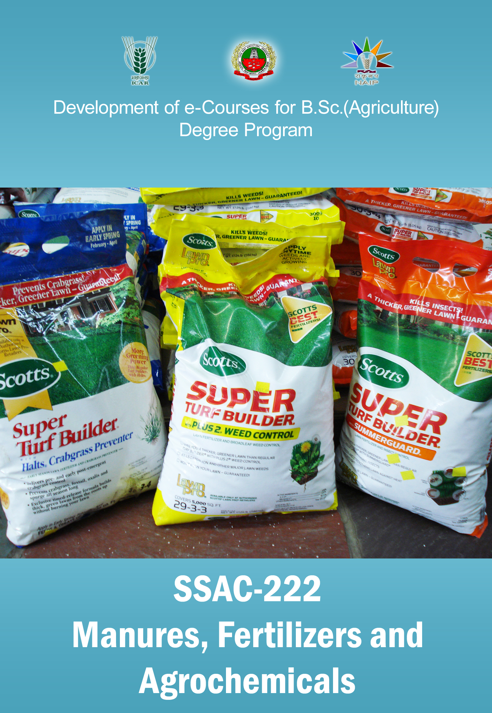

MANURES, FERTILIZERS AND AGROCHEMICALS :: (
SSAC 222
)
(2+2)

Select the lecture topic...
Lecture 01
: Manures – types,..
Lecture 02
: Green manures-Oilcakes-
Lecture 03
: Composting of organic...
Lecture 04
: Classification of fertilizers...
Lecture 05
: Nitrogenous fertilizers...
Lecture 06
: Manufacturing of ...
Lecture 07
: Manufacturing of urea
Lecture 08
: Slow release N fertilizers..
Lecture 09
: Controlled release...
Lecture 10
: P fertilizers...
Lecture 11
: Single and triple...
Lecture 12
: Potassic fertilizers ...
Lecture 13
: SECONDARY &...
Lecture 14
: Complex fertilizers ...
Lecture 15
: Mixed fertilizers...
Lecture 16
: Ingredients used in ...
Lecture 17
: BIOFERTILIZERS
Lecture 18
:IMPACT OF FERTILIZERS...
Lecture 19
: FERTILIZERS CONTROL ...
Lecture 20
: ORGANIC CHEMISTRY ...
Lecture 21
: Pesticide Formulations
Lecture 22
: Pesticide Formulation
Lecture 23
: ORGANOPHOSPHATES
Lecture 24
: ORGANOPHOSPHATES–...
Lecture 25
: CARBAMATES
Lecture 26
: BOTANICALS
Lecture 27
: Characteristics,.....
Lecture 28
: HERBICIDES
Lecture 29
: Fungicides
Lecture 30
: Organic fungicides
Lecture 31
: SYSTEMIC FUNGICIDES
Lecture 32
: Insecticide act
Lecture 33
: Fate of pesticides in...
Lecture 34
: Plant growth regulators
Syllabus